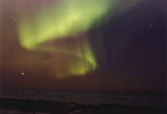

Aurorae are considered to be one of the seven natural wonders of the world. Occurring at high latitudes, these highly dynamical light shows, typically red and green in colour, are an electrical phenomenon visible in the night sky.

Credit: NASA
Aurorae are caused when energetic protons and electrons from solar flares enter our atmosphere and spiral along the Earth’s magnetic field lines. These particles can collide with electrically neutral atmospheric atoms such as oxygen and nitrogen, imparting energy and ‘exciting’ the outer valence electrons of these atoms. When these excited electrons subsequently drop back down into their initial more stable configuration, there is an associated emission of a photon of light. Each particular colour of light depends on the gas emitting the photon and the energy
difference between the excited and stable configuration of the atom involved. The light from oxygen atoms may be either red (at a wavelength of 630 nm) or green (at 558 nm), depending on the energy levels the ‘excited’ electron dropped between, and is the cause of two of the main colours seen in aurorae.
Generally located between latitudes of 60-70 degrees north and south of the equator – because the interaction of magnetic fields and charged particles is greatest near the Earth’s magnetic poles – and at an altitude of 100 to several hundred kilometers, this phenomenon migrates towards the equator at times of heightened solar activity. Aurora are also known as the northern lights (aurora borealis) and the southern lights (aurora australis). Due to the channelling of the charged solar particles along the Earth’s magnetic field lines to the magnetic poles, the lower regions of the ionosphere (below 100 km) near the poles become heavily ionised, resulting in the eerie glow in the twilight sky known as the aurora. These variable atmospheric currents also induce fluctuating magnetic fields, or geomagnetic storms.